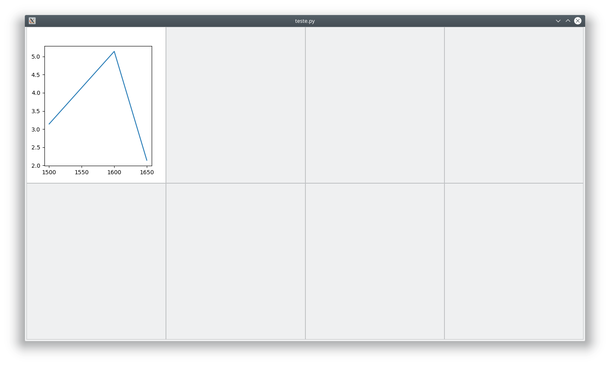
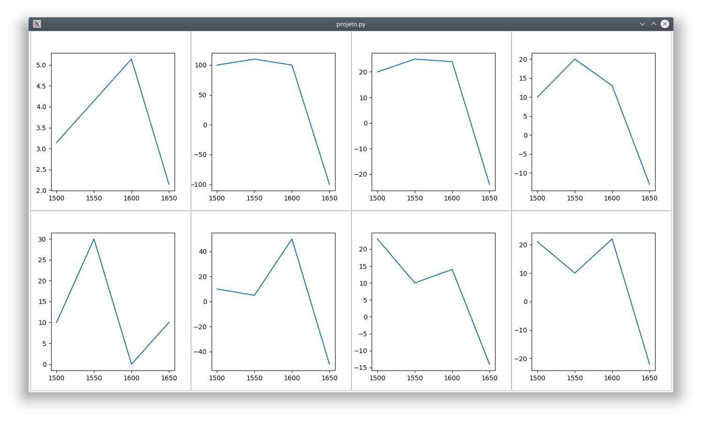
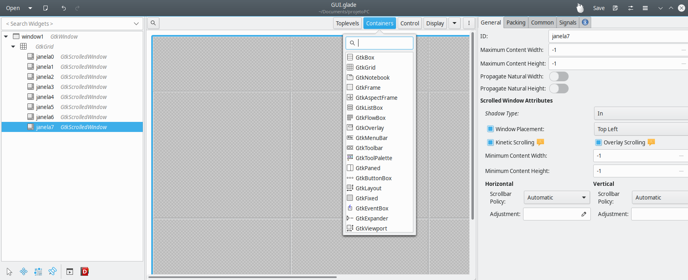
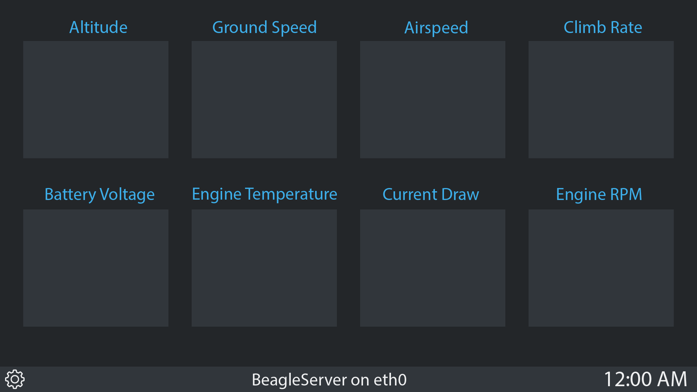
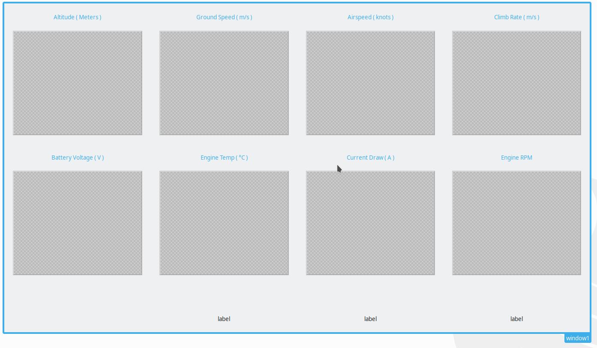
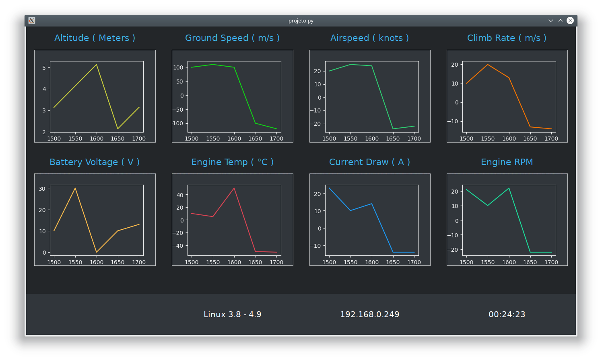

Este projeto tem como objetivo desenvolver um programa para a aquisição e visualização interativa dos dados de telemetria do voo de uma aeronave. Os parâmetros são baseados em uma aeronave autônoma não tripulada de pequeno porte, porém o projeto pode ser facilmente modificado para operar em outras aeronaves e até mesmo em modelos comerciais. Portanto, essa documentação pode ser considerada um exemplo específico de aplicação deste projeto.
O computador de bordo da aeronave, além de inúmeras outras funções, recebe os dados dos sensores e é responsável por organizá-los e publicá-los em um intervalo de tempo determinado. A comunicação com a estação solo pode ser estabelecida através de inúmeras combinações de rádio e protocolos. Para simplificar os testes, assumiremos uma conexão WiFi entre os computadores
Rodando Linux ARM Debian 9.0.4, o computador RPi recebe os dados de sensores através das GPIOs e das portas seriais, e usa um servidor LAMP (Linux, Apache, MySQL e PHP) para publicar os valores em um arquivo JSON.
O computador cliente, conectado na mesma rede WiFi do computador de bordo, receberá o arquivo JSON usando os módulos urrlib2 e json. Qualquer modificação no arquivo será lida pelo script e carregada no programa automaticamente
//Exemplo JSON
{
"altitude": 3.1415,
"ground_speed": -120,
"airspeed": -22,
"climb_rate": -14,
"bat_voltage": 13,
"eng_temp": -51,
"bat_current": -14,
"engine_rpm": -22,
"time" : "1700",
"server" : "Linux 3.8 - 4.9",
"ip" : "192.168.0.249"
}
Após a aquisição dos dados sem formatação, ocorrerá o seu processamento inicial para separar as diversas informações (altitude, combustível, velocidade, etc.) e guardá-las em estruturas de dados apropriadas. Haverá também a verificação das timestamps envolvidas na conexão para garantir a relevância dos dados e indicar possíveis falhas ou desconexões.
O pré-processamento dos dados é feito no arquivo python "update.py":
#update.py
import urllib.request;
import json;
import time;
last = 0;
response = urllib.request.urlopen('http://192.168.0.249/dados.json'); #Busca o arquivo dados.json no servidor
html = response.read(); #Lê o arquivo e armazena em uma variável
parsed = json.loads(html); #Usa o módulo json para criar um dicionário contendo as chaves e os valores
# O código abaixo cria um arquivo para cada variável, salva o valor com o tempo em milissegundos,
# fecha o arquivo e imprime o resultado na saída padrão
while(1): #loop principal
if(parsed['time']==last): #Evita dados repetidos
continue;
f = open("data/altitude","a+");
f.write(str(parsed['time']+","+str(parsed['altitude']))+"\n");
f.close();
print(str(parsed['time'])+":"+str(parsed['altitude']));
f = open("data/ground_speed","a+");
f.write(str(parsed['time']+","+str(parsed['ground_speed']))+"\n");
f.close();
print(str(parsed['time'])+":"+str(parsed['ground_speed']));
f = open("data/airspeed","a+");
f.write(str(parsed['time']+","+str(parsed['airspeed']))+"\n");
f.close();
print(str(parsed['time'])+":"+str(parsed['airspeed']));
f = open("data/climb_rate","a+");
f.write(str(parsed['time']+","+str(parsed['climb_rate']))+"\n");
f.close();
print(str(parsed['time'])+":"+str(parsed['climb_rate']));
f = open("data/bat_voltage","a+");
f.write(str(parsed['time']+","+str(parsed['bat_voltage']))+"\n");
f.close();
print(str(parsed['time'])+":"+str(parsed['bat_voltage']));
f = open("data/eng_temp","a+");
f.write(str(parsed['time']+","+str(parsed['eng_temp']))+"\n");
f.close();
print(str(parsed['time'])+":"+str(parsed['eng_temp']));
f = open("data/bat_current","a+");
f.write(str(parsed['time']+","+str(parsed['bat_current']))+"\n");
f.close();
print(str(parsed['time'])+":"+str(parsed['bat_current']));
f = open("data/engine_rpm","a+");
f.write(str(parsed['time']+","+str(parsed['engine_rpm']))+"\n");
f.close();
print(str(parsed['time'])+":"+str(parsed['engine_rpm']));
f = open("data/server","w+");
f.write(str(parsed['server'])+"\n");
f.close();
print(str(parsed['server']));
f = open("data/ip","w+");
f.write(str(parsed['ip'])+"\n");
f.close();
print(str(parsed['ip']));
last = parsed['time'];
time.sleep(0.50);
O Dashboard para visualização dos dados no computador cliente foi desenvolvido usando Python3 para lidar com o processamento e GTK3+ (Pygobject) para a interface gráfica. Após pesquisar as inúmeras opções para a construção de UI em Python3, concluiu-se que a implementação Glade era a melhor alternativa, pois apresenta certas vantagens desejáveis para esse projeto, como:
O gráficos foram gerados usando o módulo matplotlib, e a função animate para realizar as atualizações em um intervalo de tempo especificado. O código foi baseado nos tutoriais de python disponíveis neste link
Inicialmente, desenvolveu-se um programa para gerar um gráfico numa Gtk.ScrolledWindow, e depois foi utilizado o Gerador para replicar este programa para os 8 gráficos. Mais informações sobre o Gerador podem ser encontradas no fim desta seção.
Com o intuito de evitar repetições desnecessárias, nesta documentação será apresentado o código para construir um gráfico:
#projeto.py
import gi #Importanto PyGOobject
gi.require_version('Gtk', '3.0') #Selecionando a versão correta do GTK
from gi.repository import Gtk #Importando o GTK3
#Importando o FigureCanvas do matplotlib, módulo de compatiblidade com o GTK
from matplotlib.backends.backend_gtk3agg import (FigureCanvasGTK3Agg as FigureCanvas)
from matplotlib.figure import Figure #Importando Figure
import matplotlib.pyplot as plt #Importando pyplot
import matplotlib.animation as animation #Importando o módulo de animações do matplotlib
import numpy as np #importando numpy
from time import gmtime, strftime #Funções para o relógio
scale = 40; #Variável que determina o número de valores no eixo X dos gráficos que permanece na tela
def animate0(i): # Função que cuida da animação
relogio.set_text(strftime("%H:%M:%S", gmtime())); # Atualiza o relógio
graph_data0 = open('data/altitude','r').read(); #Abre o arquivo gerado pelo update.py
lines0 = graph_data0.split('\n'); #Cria uma lista com os pares ordenados x,y
xs0 = []; #Cria uma lista vazia para receber os valores do eixo X
ys0 = []; #Cria uma lista vazia para receber os valores do eixo Y
for line in lines0: #Itera por todas as linhas do arquivo de entrada
if len(line) > 1: #Caso a linha não esteja em branco
x, y = line.split(','); #Separa o par x,y e guarda em suas respectivas variáveis
if(len(xs0)>scale): # Verifica se o tamanho da lista é maior que a variável de escala
xs0.pop(0); # Caso seja, deleta o primeiro elemento das listas com x e y
ys0.pop(0); # Isso causa um efeito de "movimento" do gráfico e mantém a consistência dos intervalos
xs0.append(float(x)); #Adiciona x ao final da lista xs
ys0.append(float(y)); #Adiciona x ao final da lista xs
ax0.clear(); #limpa o subplot
ax0.plot(xs0, ys0); #plota novamente com as infromações atualizadas
builder = Gtk.Builder(); #Cria uma instância do Gtk.builder()
builder.add_from_file("GUI.glade"); #Adiciona o arquivo da interface gráfica
handlers = { #Dicionário com os sinais da interface gráfica
"onDestroy": Gtk.main_quit, #Sinal do botão de sair do menu
"on_window1_destroy": Gtk.main_quit, #Sinal do botão de fechar a janela
};
builder.connect_signals(handlers); #Passa o dicionário de sinais como argumento para o builder
sw0 = builder.get_object('janela0'); #Seleciona a Gtk.ScrolledWindow "janela0" da interface gráfica
f0 = plt.figure(); #Cria uma plt.figure() para desenhar o gráfico
ax0 = f0.add_subplot(1,1,1); #Adiciona um subplot único à figura criada
#Cores:
ax0.set_facecolor('#31363b');
f0.patch.set_facecolor('#31363b');
ax0.spines['bottom'].set_color('#eff0f1');
ax0.spines['top'].set_color('#eff0f1');
ax0.spines['right'].set_color('#eff0f1');
ax0.spines['left'].set_color('#eff0f1');
ax0.tick_params(axis='x', colors='#eff0f1');
ax0.tick_params(axis='y', colors='#eff0f1');
canvas0 = FigureCanvas(f0); #Cria uma área de desenho do GTK
ani0 = animation.FuncAnimation(f0, animate0, interval=500); #Inicia a animação com um intervalo de 500 milissegundos
canvas0.set_size_request(300, 200); #Seleciona o tamanho mínimo da área de desenho
sw0.add_with_viewport(canvas0); #Adiciona o desenho à "janela0"
server = open('data/server','r').read(); #Lê o nome do servidor
ip = open('data/ip','r').read(); #Lê o IP do servidor
slabel = builder.get_object('server'); #Seleciona o label do servidor
slabel.set_name('server'); #Dá um nome
slabel.set_text("\n"+server); #Escreve o valor lido no label
ilabel = builder.get_object('ip'); #Seleciona o label do ip
ilabel.set_name('ip'); #Dá um nome
ilabel.set_text("\n"+ip); #Escreve o valor lido no label
ilabel.set_size_request(10,10);
window = builder.get_object("window1"); #Seleciona a janela principal da interface gráfica
window.show_all(); #Mostra a janela principal
def gtk_style(): #Função de estilos CSS
css = b"""
* {
transition-property: color, background-color, border-color, background-image, padding, border-width;
transition-duration: 1s;
font-family: Cantarell;
font-size: 22px;
}
window {
background-color: #232629;
color: #232629;
}
label#relogio {
font-size: 20px;
background-color: #31363b;
color: #ffffff;
}
label#server {
font-size: 20px;
background-color: #31363b;
color: #ffffff;
}
label#ip {
font-size: 20px;
background-color: #31363b;
color: #ffffff;
}
label#logo {
font-size: 20px;
background-color: #31363b;
color: #ffffff;
}
"""
style_provider = Gtk.CssProvider()
style_provider.load_from_data(css)
Gtk.StyleContext.add_provider_for_screen(
Gdk.Screen.get_default(),
style_provider,
Gtk.STYLE_PROVIDER_PRIORITY_APPLICATION
)
gtk_style()
Gtk.main(); # Função principal do GTK
Ao executar o código acima, temos um gráfico gerado na janela0 da GUI:
Após usar o Gerador para multiplicar o código, são criados os 8 gráficos:
A interface gráfica foi desenhada usando a ferramenta open source Glade, que gera o arquivo XML utilizado pelo código base:
O Design tem o objetivo de ser o mais simples possível, permitindo que a atenção do usuário seja voltada para o conteúdo da aplicação e não para a interface em si. Por ser extremamente comum em computadores "mainstream" atuais, adotou-se a resolução 1366x768 como padrão, porém alguns cuidados foram tomados para que a aplicação se comporte adequadamente em resoluções superiores. Utilizou-se a paleta de cores do KDE Plasma 5 como referência, e antes de inicar o projeto foi feito um sketch simples usando o Adobe Illustrator:
Em seguida, usando o sketch como referência, foi construída a GUI. A versão final ficou organizada da seguinte forma:
Feito isso, basta executar o arquivo projeto.py e o programa será iniciado:
Um programa python simples pode ser executado no servidor para testar o programa com valores aleatórios:
#aleatorio.py
import time;
import random;
scale = 1000
for i in range(0,scale):
f = open("dados.json","w+");
f.write("{\n");
f.write("\"altitude\":%d,\n" % random.randint(0,100));
f.write("\"ground_speed\": %d,\n" % random.randint(0,100));
f.write("\"airspeed\": %d,\n" % random.randint(0,1000));
f.write("\"climb_rate\": %d,\n" % random.randint(0,10));
f.write("\"bat_voltage\": %d,\n" % random.randint(0,48));
f.write("\"eng_temp\": %d,\n" % random.randint(0,200));
f.write("\"bat_current\": %d,\n" %random.randint(0,90));
f.write("\"engine_rpm\": %d,\n" %random.randint(0,23000));
f.write("\"time\" :\"%d\" ,\n" % i);
f.write("\"server\" : \"Linux 3.8 - 4.9\",\n");
f.write("\"ip\" : \"192.168.0.249\"\n");
f.write("}");
f.flush();
f.close();
print(i);
time.sleep(1);
Foi gravado um vídeo curto demonstrando o funcionamento do programa. O terminal do monitor da direita está conectado via ssh a um servidor e roda o arquivo de geração de números aleatórios, enquanto o Dashboard roda no monitor central.
Devido ao grande número de partes do código repetidas, foi criado um código auxiliar no jupyter notebook para auxiliar na programação do código principal:
#update.py
l = ['altitude','ground_speed','airspeed','climb_rate','bat_voltage','eng_temp','bat_current','engine_rpm'];
for i in range(0,len(l)):
print("f = open(\"data/%s\",\"a+\");" % l[i]);
print("f.write(str(parsed['time']+\",\"+str(parsed['%s']))+\"\\n\");" % l[i]);
print("f.close();");
print("print(str(parsed['time'])+\":\"+str(parsed['%s']));" % l[i]);
print()
#funções de animação
colors = ["#c9ce3b","#11d116","#2ecc71","#f67400","#fdbc4b","#da4453","#1d99f3","#1cdc9a"];
for i in range(0,len(l)):
print("def animate%d(i):" % i);
print(" graph_data%d = open('data/%s','r').read();" % (i,l[i]));
print(" lines%d = graph_data%d.split('\\n');" % (i,i));
print(" xs%d = [];" % i);
print(" ys%d = [];" % i);
print(" for line in lines%d:" % i);
print(" if len(line) > 1:");
print(" x, y = line.split(',');");
print(" if(len(xs%d)>scale):" %i);
print(" xs%d.pop(0);" %i);
print(" ys%d.pop(0);" %i);
print(" xs%d.append(float(x));" %i);
print(" ys%d.append(float(y));" %i);
print(" ax%d.clear();" %i);
print(" ax%d.plot(xs%d, ys%d, \"%s\");" %(i,i,i,colors[i]));
#Criação dos gráficos
for i in range(0,len(l)):
print("sw%d = builder.get_object('janela%d');" % (i,i));
print("f%d = plt.figure();" %i);
print("ax%d = f%d.add_subplot(1,1,1);" % (i,i));
print("ax%d.set_facecolor('#31363b');" %i );
print("f%d.patch.set_facecolor('#31363b');" %i);
print("ax%d.spines['bottom'].set_color('#eff0f1');" %i);
print("ax%d.spines['top'].set_color('#eff0f1');" %i);
print("ax%d.spines['right'].set_color('#eff0f1');" %i);
print("ax%d.spines['left'].set_color('#eff0f1');" %i);
print("ax%d.tick_params(axis='x', colors='#eff0f1');"%i);
print("ax%d.tick_params(axis='y', colors='#eff0f1');"%i);
print("canvas%d = FigureCanvas(f%d);" % (i,i));
print("ani%d = animation.FuncAnimation(f%d, animate%d, interval=500);" % (i,i,i));
print("canvas%d.set_size_request(300, 200);" % i);
print("sw%d.add_with_viewport(canvas%d);" % (i,i));
print();